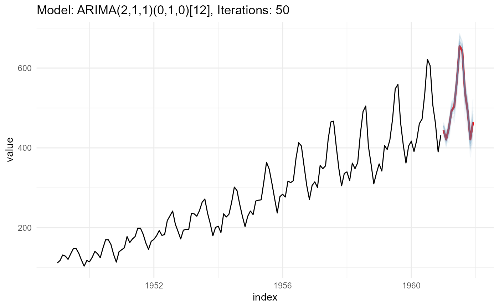

Creating different forecast paths for forecast objects (when applicable),
by utilizing the underlying model distribution with the simulate function.
Usage
ts_forecast_simulator(
.model,
.data,
.ext_reg = NULL,
.frequency = NULL,
.bootstrap = TRUE,
.horizon = 4,
.iterations = 25,
.sim_color = "steelblue",
.alpha = 0.05
)Arguments
- .model
A forecasting model of one of the following from the
forecastpackage:Arima()with xreg
- .data
The data that is used for the
.modelparameter. This is used withtimetk::tk_index()- .ext_reg
A
tibbleormatrixof future xregs that should be the same length as the horizon you want to forecast.- .frequency
This is for the conversion of an internal table and should match the time frequency of the data.
- .bootstrap
A boolean value of TRUE/FALSE. From
forecast::simulate.Arima()Do simulation using resampled errors rather than normally distributed errors.- .horizon
An integer defining the forecast horizon.
- .iterations
An integer, set the number of iterations of the simulation.
- .sim_color
Set the color of the simulation paths lines.
- .alpha
Set the opacity level of the simulation path lines.
Details
This function expects to take in a model of either Arima,
auto.arima, ets or nnetar from the forecast package. You can supply a
forecasting horizon, iterations and a few other items. You may also specify
an Arima() model using xregs.
See also
Other Simulator:
ts_arima_simulator()
Examples
suppressPackageStartupMessages(library(forecast))
#> Warning: package 'forecast' was built under R version 4.2.2
suppressPackageStartupMessages(library(dplyr))
# Create a model
fit <- auto.arima(AirPassengers)
data_tbl <- ts_to_tbl(AirPassengers)
# Simulate 50 possible forecast paths, with .horizon of 12 months
output <- ts_forecast_simulator(
.model = fit
, .horizon = 12
, .iterations = 50
, .data = data_tbl
)
output$ggplot
